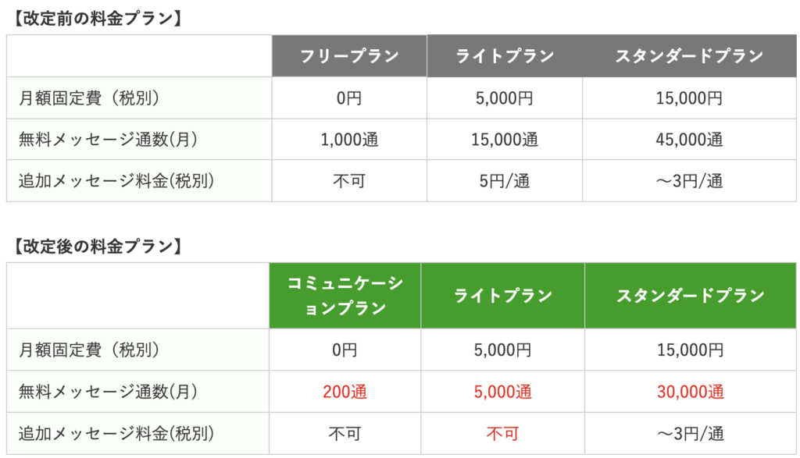
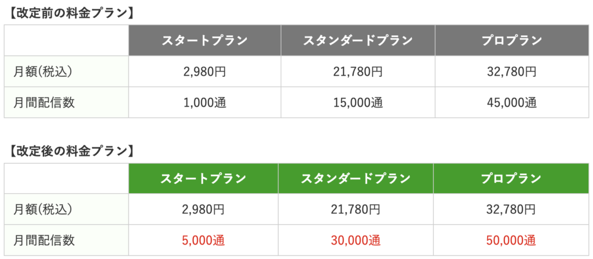

#049_Lステップも料金改定！
前回のブログで、LINE公式アカウントの料金改定（6月1日〜）と、その対策について解説しました。新しい料金体系は下記の通りです。
LINE公式アカウントの料金改定

すでにご存知の方もいらっしゃるでしょうが、なんとmatsumotoおすすめのLステップも同じタイミングで料金が改定されました！ これは大変…、と驚かれた方も多いでしょう。
ここからは、Lステップの料金改訂について解説していきます。
１）Lステップの料金改定
ステップの新料金プランは、月間メッセージ配信数が増え、実質値下げになりました！
Lステップの新料金

これはありがたいですね！ 特に、過去のスタートプランユーザーは月のメッセージ通数が1,000通しかなかったため、友だち数が600人、800人と本格的に増えてくると配信1回＋個別チャット程度で通数が足りなくなる、ということもありました。
が、スタートプラン（2,980円）→スタンダードプラン（21,780円）にプランをアップグレードするには費用差が大き過ぎるため、そのまま運用自体がほったらかしになる、、、というパターンが多かったようです。
２）月々の運営費用は？
ここで、それぞれの料金改定により、ユーザーの費用負担がどうなるのか？ 実際にシミュレーションしていきます。
LINE公式アカウントのコミュニケーションプラン（無料）は配信通数が月に200となり、これだと個別チャット程度しか利用しかできません。
本気でLINE公式アカウントを活用するのであれば、まずライトプラン（5,000通／5,000円）は必要でしょう。Lステップのほうはスタートプラン（5,000通／2,980円）を選ぶことになります。つまり、
LINE公式アカウント 5,000円 ＋ Lステップ 2,980円 ＝ 7,980円（税別）
・・・が毎月の経費となります。このくらいがLINE公式アカウントを活用するための費用としては妥当、といったところでしょうか。
３）費用を抑えるコツ
このブログにたどり着くであろう個人事業主・小規模店舗であれば、最初はこの7,980円も負担に思われるかもしれませんが、逆にこれ以上費用がかからないよう工夫することはできます！
たとえば、各プランに設定されている通数について、自動返信メッセージは含まれていない、ということはご存知でしたか？
過去のブログ記事で解説している通り、セグメント配信など駆使すれば返信メッセージは自動返信となり、通数を節約できます！このように、コツさえおさえておけばずっと7,980円でいけるでしょう。
旧プランで比較すると、初年度スタートプラン（2,980円）→翌年スタンダードプラン（26,780円）にアップした場合、3年で
（2,980×12ヶ月）＋（26,780×24ヶ月）＝678,480円（税別）
かかります。
ところが、上記のようにうまく7,980円に費用を抑えられれば、3年後にかかる費用はこの通り！
➡︎ 26,780×36ヶ月＝287,280円（税別）
なんと約40万円の経費節約になります！いかがでしょう？
ポイントは、
①顧客の情報を取得する仕組みを正しく構築しておく
②セグメントを分けて情報を発信する
・・・の二点です！ 通数の節約だけでなく、顧客の特性や動向を把握して効果的なプロモーションを実践できるので、ぜひ抑えておいてくださいね！ 困ったときは、ぜひコンサルタントまでご相談ください。
●LINE公式アカウントをオススメする理由はこちら
●LINE公式アカウントでできることはこちら
●Lステップでできることはこちら